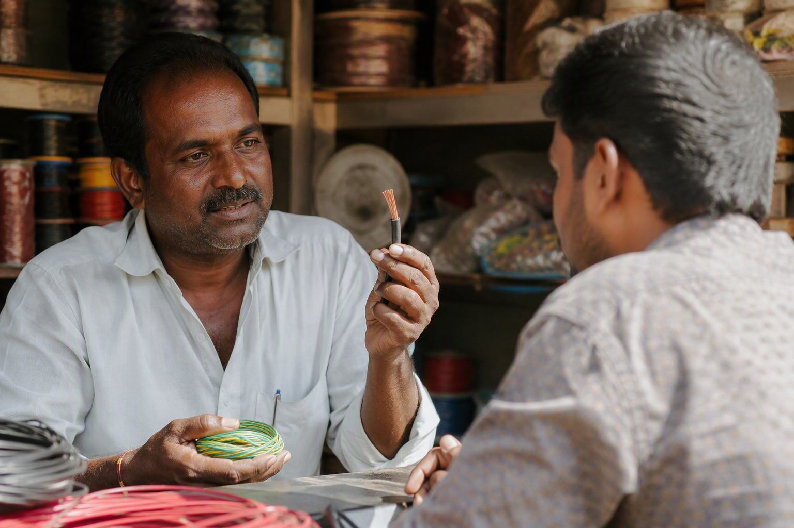

RR Kabel vs Finolex Wires: Which Is Better, and What You Pay for the Difference

RR Kabel is the premium-priced brand of the two and earns part of that premium with its Firex LS0H low-smoke range and its Unilay conductor; Finolex matches it on the ISI copper inside, offers an equivalent FR-LSH and halogen-free grade at a lower price, and is easier to verify and to buy in Bangalore. For most homes Finolex is the better value; RR Kabel is the choice when the specification names it or when the buyer wants the top-of-market brand.
The two brands
RR Kabel, from Mumbai, sells on the strength of international certifications and its Unilay conductor, a compacted bundle of strands that gives a rounder, more uniform core. Its residential ranges include Superex FR, Firex LS0H and the HR-FR heat-resistant grade, all in 90 m coils. Finolex, from Pune, is the older and larger house-wire brand with the Silver Pack and Gold Pack FR ranges, Flamegard FR-LSH and Finoultra HFFR, in coils from 45 m to 300 m.
Where RR Kabel is ahead
- Low-smoke, zero-halogen positioning. Firex LS0H is RR Kabel's headline product and the brand has marketed the fire-safety case harder than anyone in the category.
- Conductor uniformity. Unilay strands lie in a regular pattern, which RR Kabel argues gives a more consistent cross-section. Finolex's multistrand conductor meets the same IS 694 resistance limit.
- Brand perception in premium apartments and villas, where architects specify it by name.
Where Finolex is ahead
- Price. RR Kabel list prices sit above Finolex for the same size and grade, and dealer prices follow. Mount Cable India's Finolex Silver Pack coils are ₹2,257 in 1.5 sq mm and ₹3,683 in 2.5 sq mm, current to 4 September 2026, taxes extra. See the Finolex price list.
- An equivalent grade for every RR Kabel grade. Flamegard FR-LSH answers Firex LS0H for flats and stairwells; Finoultra is the halogen-free e-beam range. FR vs FR-LSH vs Finoultra explains which to use where.
- Verification. Two QR codes checked against Finolex's own server, in ten seconds with the Finolex wire scanner.
- Availability and coil options. Finolex is in every Bangalore shop and offers 45, 90, 180, 300 and 200 m coils; RR Kabel is largely a 90 m coil brand stocked by fewer retailers.
Grade for grade
| Use | RR Kabel | Finolex |
|---|---|---|
| Standard house wiring | Superex FR | Silver Pack / Gold Pack FR |
| Flats, stairwells, low smoke | Firex LS0H | Flamegard FR-LSH |
| Halogen-free specification | Firex LS0H | Finoultra HFFR |
| Heat-resistant (kitchen, geyser, long AC runs) | HR-FR | Gold Pack FR sized one step up |
| Project coils | 90 m | 180 m, 300 m / 200 m |
What the premium buys, honestly
Both brands make wire that meets IS 694 and both, correctly sized, will outlast the house. The extra you pay for RR Kabel buys the LS0H positioning, the Unilay conductor and the brand. Whether that is worth it depends on the building: in a high-rise flat with long shared corridors, a low-smoke grade is worth specifying, and either brand's LS0H or FR-LSH does it. In an independent house, standard FR from either brand is the sensible spend, and the money saved goes further on a better MCB board.
Our recommendation
Finolex Gold Pack or Silver Pack for an independent house; Flamegard FR-LSH for a flat; RR Kabel Firex where the architect's specification names it or the client wants the premium brand. We stock and quote both, and the wider view with Polycab in the picture is in RR Kabel vs Polycab vs Finolex.
Want both brands priced for your list? Send it to WhatsApp 88676 76700 and Mount Cable India will quote each brand line by line within 60 minutes, so the comparison is made on real figures rather than list prices. No obligation to buy from us.
Frequently asked questions
Is RR Kabel better than Finolex?
Is RR Kabel more expensive than Finolex?
What is RR Kabel Firex LS0H?
What is the Unilay conductor?
Which should I use for a flat in Bangalore?
Where can I buy RR Kabel and Finolex in Bangalore?
Ready to order for your home?
Upload your wiring list for an instant quote — 100% original material, free next-day delivery across Bangalore.